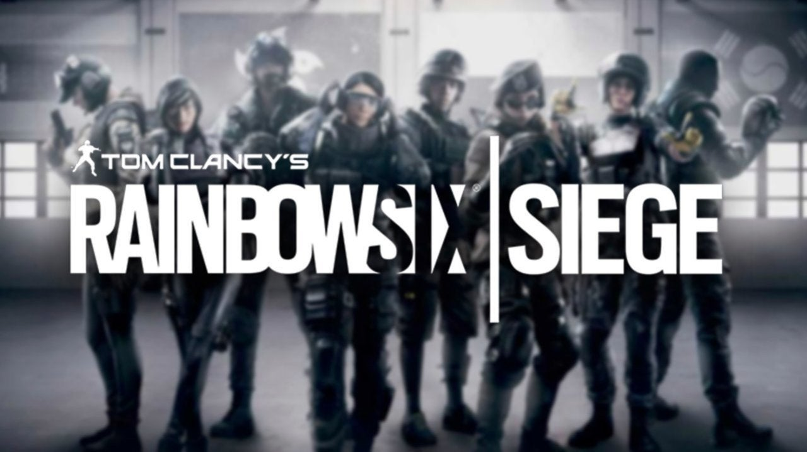

Personal Review's
Sepertinya tidak ada lagi kalimat yang lebih relevan untuk menjelaskan sikap yang seharusnya diambil gamer untuk setiap game multiplayer yang meluncur ke pasaran selain mengambil kalimat yang tampaknya tak asing lagi jika Anda merupakan konsumen setia bis khusus di wilayah ibu kota – Transjakarta. Setiap kali berhenti di satu terminal dan menyediakan waktu bagi penumpang untuk naik dan turun, ia selalu diikuti dengan peringatan kecil “Hati-hati Melangkah, Terima Kasih” untuk membuat Anda lebih waspada dengan celah antara bis dan halte yang ada. Peringatan ini juga bisa diarahkan pada gamer untuk menyambut tren game multiplayer yang tampaknya tengah menemukan momentum di industri yang satu ini. Mengapa? Karena Anda bisa saja termakan hype dan berakhir dengan kantong lebih tipis dengan pengalaman yang tak terasa memuaskan.
Dengan performa dua game berbasis multiplayer di tahun 2015 kemarin – Evolve dan Star Wars Battlefront yang menurut kami berakhir tak sebaik yang diperkirakan, ada kewaspadaan ekstra untuk mencicipi lebih banyak game multiplayer di masa depan. Ada ketakutan bahwa uang yang Anda keluarkan justru berakhir pahit, entah karena konten yang begitu minim, dukungan developer yang terhenti begitu saja, atau karena komunitas yang ternyata juga berakhir tak sama puasnya dan meninggalkan game ini dalam waktu yang begitu singkat. Ketakutan dan rasa pesimis ini jugalah yang mengawali langkah kami masuk ke game tactical shooter dari Ubisoft – Rainbow Six: Siege. Terlepas dari impresi masa beta yang pantas diacungi jempol, ada ketakutan bahwa ia akan berakhir sama.

Namun untungnya, impresi pertama yang ia tawarkan begitu kuat. Dua poin plus terbaik yang kami cicipi di awal-awal permainan adalah betapa balancenya sistem kompetisi yang ia tawarkan dengan atmosfer tactical yang ternyata masih mengakar kuat. Ia berhasil lepas dari cita rasa game FPS mainsteam sekelas Call of Duty, bahkan Counter Strike sekalipun dengan daya tarik dan pendekatan gamepaly yang unik. Impresi pertama yang begitu positif ini terus membuat kami kembal terlepas dari fakta bahwa ia tak banyak menawarkan mode permainan di dalamnya.